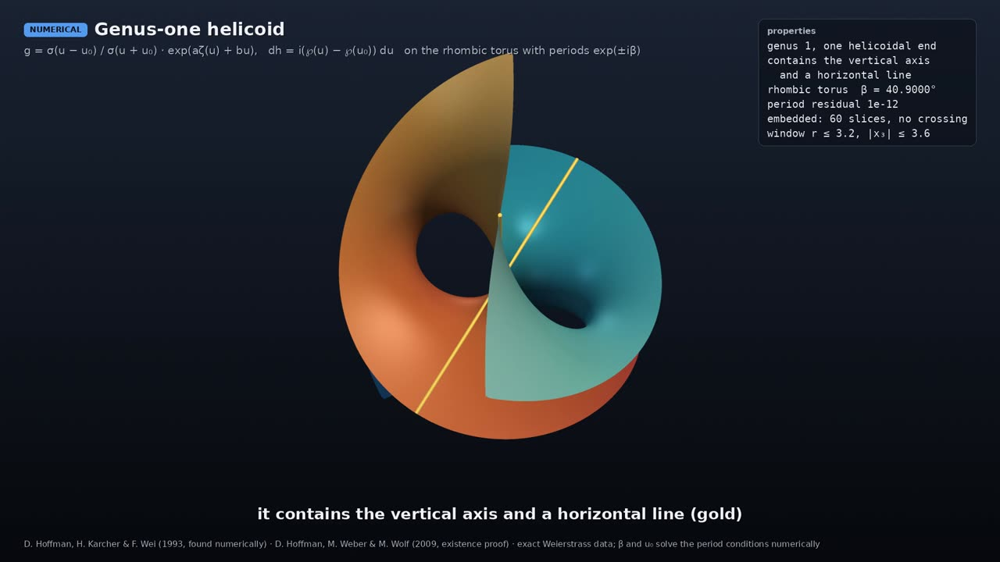

Professor of Mathematics
Paata Ivanisvili
Department of Mathematics, University of California, Irvine

The genus-one helicoid

NUMERICAL animation · narrated
Why it is remarkable. The plane and the helicoid are the only complete, embedded, simply connected minimal surfaces in space (Meeks–Rosenberg 2005, together with Colding–Minicozzi). So it is natural to ask whether a helicoid can carry a handle. Hoffman, Karcher and Wei found one in 1993, with computer evidence that it is embedded. Hoffman, Weber and Wolf proved in 2009 that an embedded genus-one helicoid exists: far from the axis it looks like a helicoid, but near the origin it has a single handle. Hoffman, Traizet and White (2016) later proved there are embedded helicoids with any number of handles.
What the animation shows. The surface uses exact Weierstrass data on a torus; two constants are found numerically so that the surface closes up (residual 10−12), and no self-crossings were found on 60 horizontal slices. The camera starts at the handle and pulls back to show the surface becoming a helicoid.
D. Hoffman, H. Karcher & F. Wei (1993); D. Hoffman, M. Weber & M. Wolf, Ann. of Math. 169 (2009); D. Hoffman, M. Traizet & B. White, Acta Math. 216 (2016); W. H. Meeks III & H. Rosenberg, Ann. of Math. 161 (2005).